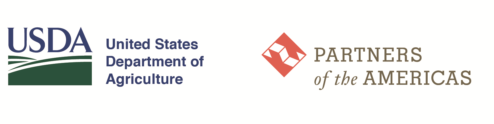

ALE - Participación en Talleres CAE

ALE - Participación en talleres
Manejo seguro de alimentos - CAE
Perfil descriptivo de las personas participantes y de los eventos registrados
PARTICIPANTES
-
Personas registradas
EVENTOS
-
Formularios / eventos
EDAD PROMEDIO
-
Años
MUJERES
-
-
HOMBRES
-
-